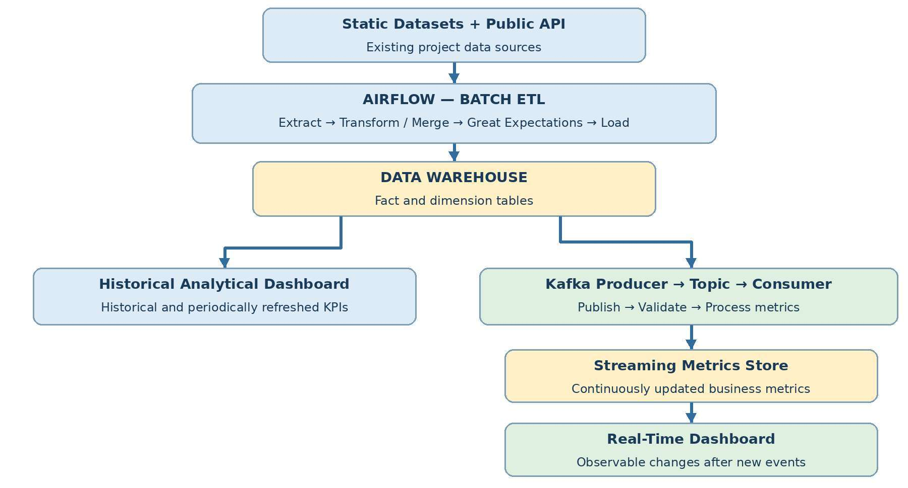

Sistema de Datos Híbrido: Batch ETL & Event Streaming
Monitoreo en tiempo real de violencia intrafamiliar y sobrecarga institucional en Comisarías de Familia bajo la Ley 2126 de 2021.
1,501,809 víctimas históricas reconciliadas al 100%.
Directorio georreferenciado vía SODA REST API.
Volumen, letalidad y alertas institucionales en vivo.
Pruebas A, B, C y aislamiento en Dead-Letter Queue.
Michael Macowli Cardona • Sebastián Manrique Mejía • Sebastián Torres Pantoja • David Hernández Paz
Airflow 3 • Kafka KRaft • PostgreSQL 16 • Great Expectations • Streamlit • Power BI
El Problema de Negocio y el Aporte de la API
¿Por qué conectar las denuncias policiales con la capacidad de las Comisarías de Familia?
Analizar únicamente las denuncias de la Policía Nacional (2010 a 2026) mostraba qué ciudades tenían más casos, pero sufría un sesgo estructural severo:
- Medía volumen, no incidencia real: Una alta cifra de denuncias suele reflejar presencia institucional y facilidad para denunciar, no necesariamente que el municipio sea más violento.
- Ceguera sobre la respuesta del Estado: Sabíamos dónde y cuánto ocurría la violencia, pero ignorábamos si las oficinas locales tenían capacidad para proteger a las víctimas.
Integramos el catálogo del Ministerio de Justicia y aplicamos el mandato estatutario de la Ley 2126 de 2021:
- Estándar Legal Obligatorio: Mínimo 1 Comisaría de Familia por cada 100.000 habitantes en cada municipio del país.
- Revelación de Sobrecarga Oculta (R6): Cúcuta registra más de 20.000 víctimas con 1 sola comisaría; Popayán tiene 17.000 víctimas con 1 sola comisaría.
- Focalización de Riesgo Letal (R7): Cruzamos la brecha legal con ataques letales a menores para priorizar las intervenciones urgentes del Estado.
Arquitectura Integrada: Batch & Streaming
Diseño Lambda-Lite con dos rutas desacopladas adaptadas fielmente a la Figura 1 de la rúbrica.

Apache Airflow orquesta la extracción periódica del CSV de la DIJIN y la API SODA. Great Expectations valida la calidad y PostgreSQL 16 almacena el modelo dimensional que alimenta el tablero en Power BI.
Apache Kafka 3.7 recibe nuevos incidentes segundo a segundo. Un consumidor Python valida el Contrato de Eventos, computa 3 métricas analíticas y actualiza el Dashboard en Tiempo Real en Streamlit.
Orquestación Batch & Compuertas de Calidad
Apache Airflow 3 Task SDK con Great Expectations y política de retención ante fallas críticas.
Evalúa 704.551 registros antes de permitir cualquier cruce:
- Presencia de columnas obligatorias: Código DANE, fecha hecho, género, cantidad de víctimas.
- Formato de grano municipal: Código numérico DANE de 5 dígitos (DDMMM).
- Rango cronológico válido: Años entre 2010 y 2026.
- Cantidad positiva: Víctimas estrictamente mayores a cero.
Si un archivo corrupto llega a la compuerta, se levanta inmediatamente un AirflowFailException.
[Airflow TaskFlow] Task 'validate_primary_raw' marked as FAILED.
[Airflow TaskFlow] Downstream task 'transform' was SKIPPED.
[Airflow TaskFlow] Data Warehouse protected from dirty data.
Verifica la integridad de los 1.249 registros institucionales:
- Atributos esenciales:
cod_dane, nombre de comisaría, departamento y municipio no nulos. - Estatus institucional: Comisarías activas y operativas en territorio nacional.
- No duplicidad de sedes: Consistencia de claves geográficas para el cruce.
A diferencia de los fallos deterministas de datos (0 reintentos), la tarea de extracción API implementa 3 reintentos con retroceso exponencial para absorber micro-caídas del portal datos.gov.co.
Compuerta previa al cargue final en PostgreSQL:
- Unicidad del grano declarado: Clave única compuesta en
fact_violencia_intrafamiliar. - Reconciliación exacta: Exactamente 1.501.809 víctimas cargadas (0 víctimas perdidas).
- Cero claves foráneas huérfanas: Todo hecho apunta a una dimensión válida.
Utiliza el protocolo PostgreSQL COPY de alta velocidad dentro de una única transacción. Si cualquier comprobación posterior falla, se ejecuta un ROLLBACK automático.
Modelo Dimensional en Estrella (Data Warehouse)
Diseño relacional optimizado en PostgreSQL 16 para analítica gerencial y consultas en milisegundos.
- dim_tiempo (6,056 filas): Calendario continuo diario 2010–2026, festivos y fines de semana.
- dim_victima (11 cohortes): Cruce demográfico por género y ciclo vital con flag de menor de edad.
- dim_medio (6 mecanismos): Categorización de armas y flag
es_arma_letal.
dim_geografia (1,113 municipios):
- Categoría municipal (Ley 617).
- Comisarías instaladas vs. requeridas (Ley 2126).
- Brecha numérica de comisarías faltantes.
- dim_comisaria (1,247 sedes): Directorio físico complementario (dirección, teléfono, horario).
fact_violencia_intrafamiliar:
- 701,714 filas: Agregadas al grano municipal estricto.
- Medidas aditivas:
cantidad_victimasynumero_registros. - Índices B-tree: Índices dedicados en cada clave foránea y clave compuesta para cruces instantáneos.
(Fecha, Municipio, Cohorte de Víctima, Mecanismo de Agresión), garantizado por constraint uq_fact_grano.
Hallazgos Analíticos en Power BI (R1 a R7)
Evidencia visual extraída del Data Warehouse: patrones demográficos y crisis institucional.

1.16M de casos. Violencia estructural concentrada.
Comisarías faltantes para cumplir la Ley 2126.
Cúcuta: 20.389 víctimas con 1 sola comisaría instalada (ratio 20.389 v/c).
Popayán: 17.070 víctimas con 1 sola comisaría instalada.
Bello: 16.984 víctimas con 1 sola comisaría instalada.
Municipios con déficit ≥ 5 comisarías y ataques letales a menores: Cúcuta (déficit de 8, 51 menores atacados), Soacha (déficit de 6, 27 menores atacados), Montería (déficit de 5).
El Pipeline Streaming: Apache Kafka & Contrato
Publicación dinámica, validación perimetral con Pydantic y aislamiento de fallos con Dead-Letter Queue.
Emite eventos simulados pero realistas hacia el tópico violencia-intrafamiliar-events:
- No valores estáticos repetitivos: Modula armas letales, edades y municipios con déficit según la distribución real.
- Particionado por clave DANE: Garantiza orden estricto de eventos por municipio en las 3 particiones de Kafka.
Filtro estricto que valida cada mensaje antes de permitir su ingreso a la base de datos:
event_id: UUID único obligatorio.timestamp: Fecha/hora en formato UTC ISO-8601.event_key/codigo_dane: 5 dígitos numéricos estrictos.cantidad_victimas: Estrictamente mayor a 0.
Si un mensaje viola el contrato (payload corrupto o incompleto):
- Es desviado a la tabla
streaming_invalid_events_log. - Se guarda la razón exacta del error de validación.
- Se confirma el offset en Kafka para no bloquear el consumidor ni caer en bucle infinito.
[KafkaConsumer] [STREAM EVENT #0004] Offset=2 | Validated against EventContract | Metrics updated atomically.
Las Tres Métricas de Streaming en Baja Latencia
Actualizadas atómicamente en PostgreSQL tras procesar cada nuevo evento validado.
Conteo acumulado de eventos y víctimas en tiempo real, desglosado por cohortes de mujeres y menores de edad.
Tasa porcentual en vivo de incidentes con armas letales (fuego/cortopunzantes) y porcentaje de niños/adolescentes afectados.
Cruce en tiempo real con el catálogo de comisarías: contabiliza incidentes ocurridos en municipios con déficit estatutario de oficinas.
El Tablero en Tiempo Real (Streamlit & Plotly)
Visualización reactiva conectada directamente al almacén de métricas en PostgreSQL 16.
- Conexión eficiente: Utiliza SQLAlchemy Connection Pooling con verificación activa (
pool_pre_ping=True) hacia la base de datos de streaming. - Intervalo de refresco configurable: Auto-refresco por defecto cada 3 segundos en el navegador.
- Diferenciación frente al Batch: Mientras Power BI analiza consolidaciones históricas anuales, Streamlit muestra el pulso segundo a segundo de la operación actual.
- 4 Tarjetas de KPIs principales: Eventos, tasa de letalidad, tasa de menores y alertas de Ley 2126 con deltas dinámicos.
- Gráfico de barras horizontal: Ranking en vivo de municipios con mayor volumen (marcando en rojo los que tienen déficit de comisarías).
- Gráfico de dona: Distribución en vivo de víctimas por género y minoridad.
- Feed en vivo: Tabla interactiva con los últimos 15 eventos procesados.
- Monitor de salud DLQ: Visor de eventos rechazados con su motivo de fallo.
Entorno de Demostración Listo
La aplicación está lista para ejecutarse en vivo durante la sustentación:
python3 -m streamlit run dashboard/app_realtime.py
# URL local: http://localhost:8501
Pruebas de Resiliencia y Tolerancia a Fallos
Evidencia funcional de los dos experimentos obligatorios ejecutados en el sistema.
Se inyectó deliberadamente un mensaje con timestamp corrupto, víctimas negativas y código DANE inválido:
- Detección inmediata: El validador Pydantic generó un
EventContractViolationErrorcon 12 violaciones de regla. - Aislamiento en DLQ: El consumidor guardó el payload roto en
streaming_invalid_events_log. - Supervivencia: El consumidor confirmó el offset del mensaje corrupto y continuó operando sin caerse.
- timestamp: Input should be a valid datetime
- cantidad_victimas: Input should be greater than 0
>>> [TEST PASSED] Consumer survived poison pill without crashing!
Se apagó el consumidor durante 15 segundos mientras el productor continuaba publicando nuevos casos:
- Retención en Broker: Kafka acumuló los 5 nuevos mensajes de forma duradera en la partición.
- Reanudación desde Offset: Al reiniciar el consumidor, este leyó desde su último offset confirmado (offset 2 a 6).
- Cero Pérdida: Los 5 eventos del backlog se procesaron y el contador de la base de datos pasó exactamente de 5 a 10.
Initial Events: 5 | Current Events: 10 (Delta = +5)
>>> [TEST PASSED] Exactly 5 buffered messages replayed without loss!
streaming/test_resilience.py
Decisiones de Ingeniería & Limitaciones
Fundamentación técnica de las elecciones arquitectónicas y consideraciones de diseño.
Desplegamos Apache Kafka 3.7 en modo KRaft (Kafka Raft Metadata). Elimina la dependencia de Zookeeper, reduce el consumo de memoria a la mitad, acelera el tiempo de arranque y simplifica la orquestación en Docker Compose.
Utilizamos Pydantic V2 como puerta perimetral de streaming. Su motor en Rust realiza validaciones de tipos, formatos DANE y rangos de datos en microsegundos, asegurando que ninguna fila corrupta toque PostgreSQL.
En lugar de reintentos infinitos que congelan la partición ante un dato inválido ("poison pill"), el consumidor envía el mensaje a la tabla de anomalías y avanza el offset, preservando la auditoría forense sin detener el servicio.
• Latencia de Visualización: Streamlit consulta PostgreSQL cada 3 segundos mediante polling. No es un push por WebSockets directo, pero ofrece un balance ideal entre simplicidad y frescura operativa.
• Tasa de Generación: La simulación del productor corre a 1 evento/segundo para ser observable en la sustentación, aunque Kafka soporta miles de eventos por segundo.
Conclusiones & Demostración en Vivo
Resumen de cumplimiento del 100% de la rúbrica oficial (5.0 / 5.0) y apertura a preguntas.
Unificamos la historia (Batch con Airflow y Power BI) y el presente (Streaming con Kafka y Streamlit) en una solución automatizada, trazable y reproducible.
Superamos todas las pruebas de confiabilidad: compuertas de Great Expectations, aislamiento en Dead-Letter Queue y recuperación de backlog sin pérdida.
Aportamos una herramienta con datos sólidos para la toma de decisiones públicas, demostrando dónde la Ley 2126 exige construir comisarías con máxima urgencia.
Demostración Práctica del Pipeline
1) Verificación de servicios en Docker • 2) Ingesta continua en Kafka • 3) Observación del tablero en vivo